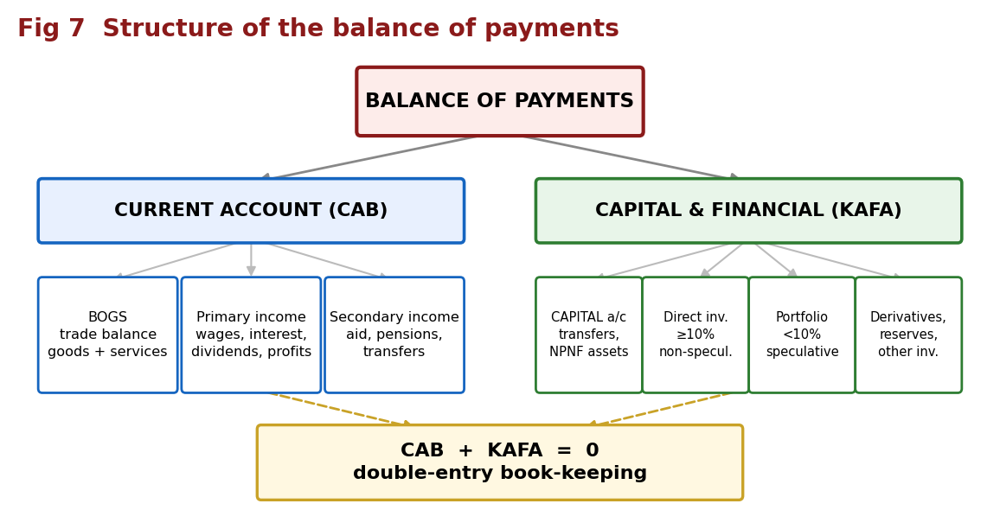
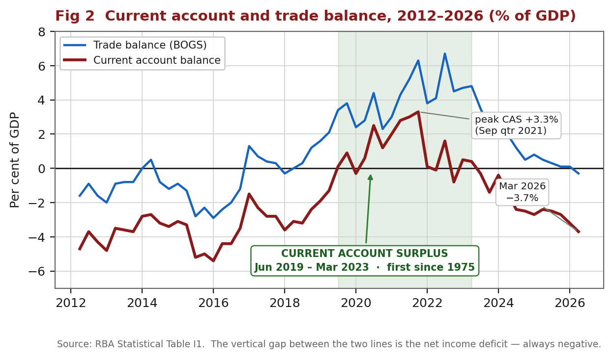
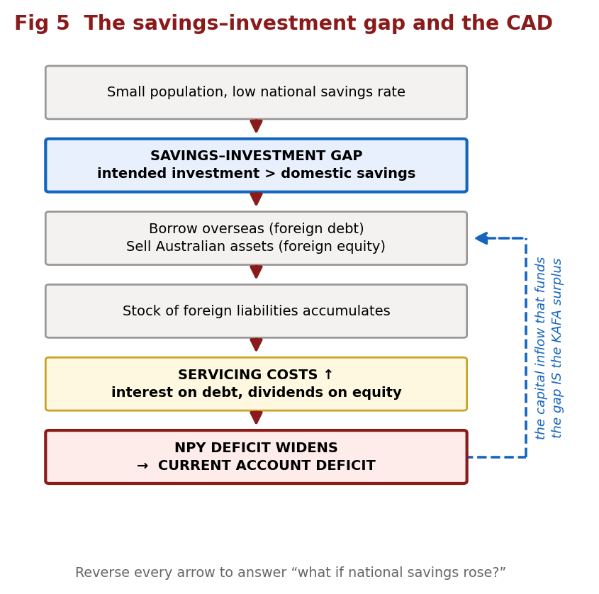
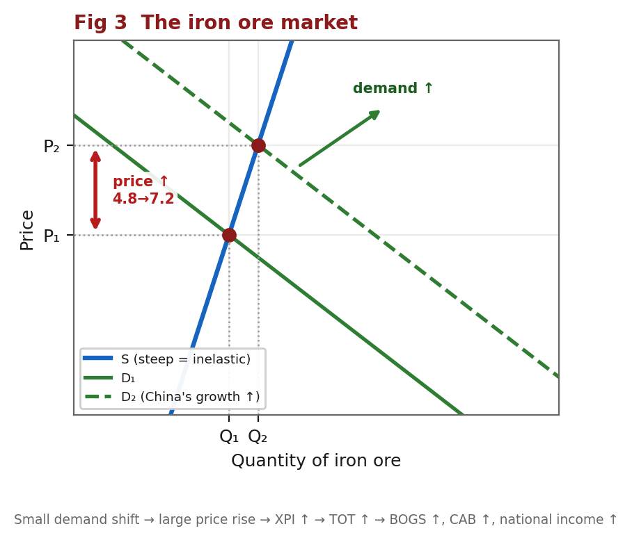
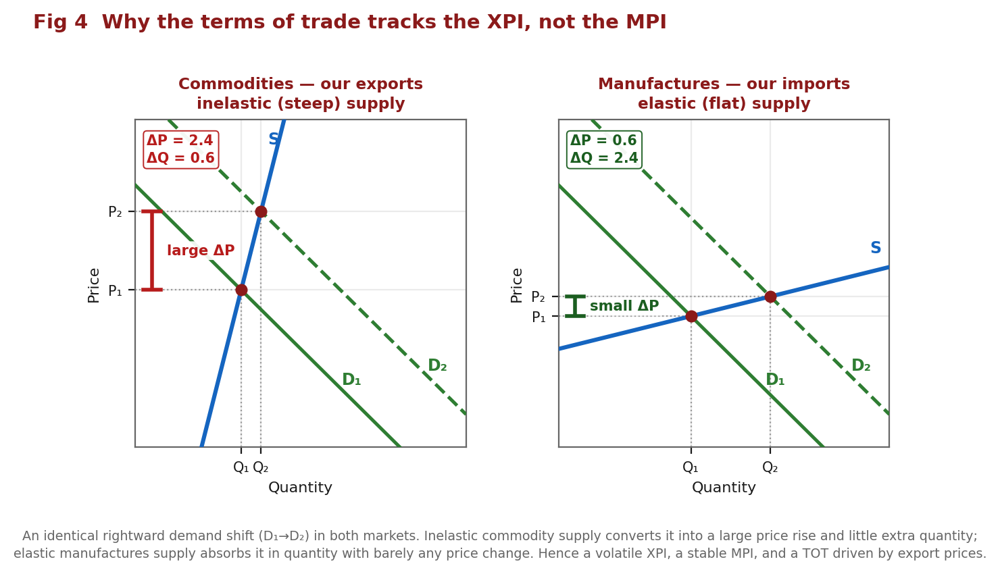
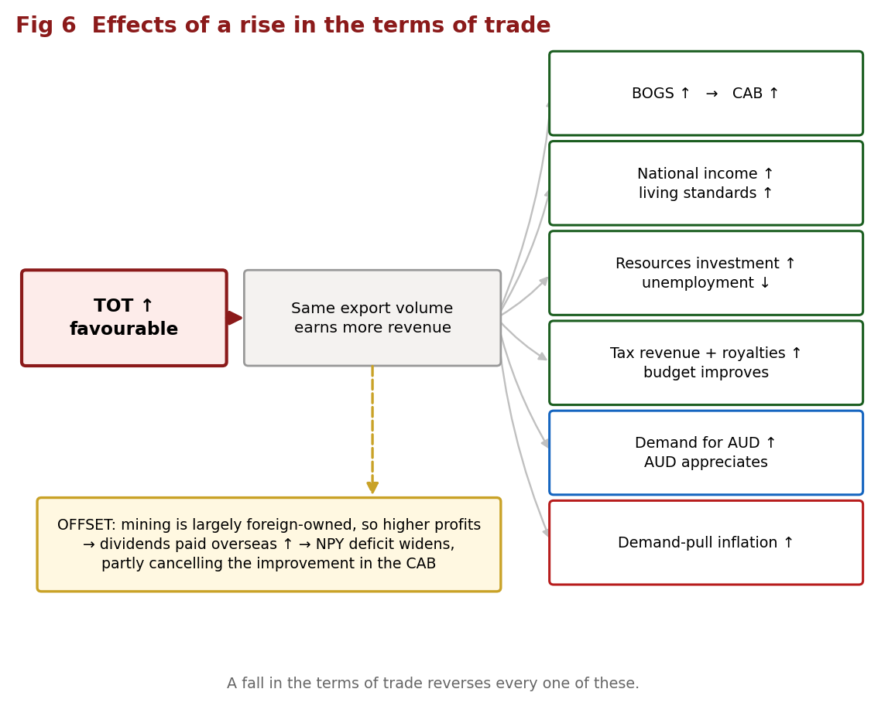
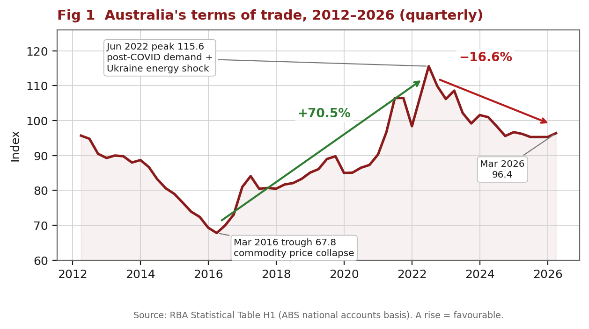

Illustrated study notes. Everything in the condensed version, expanded, with seven diagrams. Charts are built from live RBA data; the theory diagrams are drawn to exact geometry.
Assessed: short answer test, MCQ + short answer/data. Five dot points — the concept and structure of Australia's BOP · reasons for Australia's current account balance · the CAB and the savings/investment gap · the concepts of the terms of trade and the TOT index · the effects of changes in Australia's terms of trade.
Balance of payments: a systematic record of all transactions between the residents of Australia and the residents of the rest of the world over a given period of time. Residents = individuals, firms, the government and other organisations operating in Australia. It is a flow over a period, not a stock.
Current account (CAB): records the value of the flow of goods, services and income between Australian residents and the rest of the world. "Current" because what is traded is consumed or received in the current period.
Capital and financial account (KAFA): records capital and financial transactions, including changes of ownership of Australia's assets and liabilities.
Terms of trade: an index measuring the relative movements in the prices of exports and imports — the ratio of export prices to import prices. It measures the quantity of imports obtainable in exchange for a given volume of exports.
Savings–investment gap: the gap between Australia's intended level of investment and the level of domestic savings available to fund it.
Servicing costs: future financial obligations arising from borrowing funds overseas (interest) or attracting foreign investment (dividends and profits).
CREDIT = money INTO Australia DEBIT = money OUT of Australia
Net goods = goods credits − goods debits
Net services = services credits − services debits
BOGS (trade balance) = net goods + net services
CAB = BOGS + net primary income + net secondary income
KAFA = capital account balance + financial account balance
CAB + KAFA = 0 ← always, by double-entry book-keeping
CAB ≈ national savings (S) − investment (I)
TOT index = (XPI ÷ MPI) × 100
Price index = (total price this year ÷ total price in base year) × 100
% change = (new − old) ÷ old × 100 ← divide by the OLD value
Net errors and omissions is the balancing item, included because some transactions are hard to measure accurately and others are missed or omitted entirely.

| Account | Component | Records | Examples |
|---|---|---|---|
| Current | BOGS / trade balance | Goods and services exported less imported. Forms part of GDP, which is why most attention goes here | Iron ore, coal, LNG, beef ↔ cars, fuel, machinery; tourism, education, freight, insurance |
| Primary income | Income earned from, less paid to, the rest of the world from working and from financial investments | Wages, dividends, interest, profits | |
| Secondary income | Government income/transfers, and transfers where one party provides something without receiving anything in return | Foreign aid, pensions, insurance payouts, tax refunds | |
| Capital | Capital transfers | Ownership transferred with nothing specific in return | Debt forgiveness; conditional grants for capital projects (aid to build roads, dams, schools) |
| Non-produced, non-financial assets | Intangibles and rights to use natural resources | Brand names, copyrights, trademarks; mining and fishing rights | |
| Financial | Direct investment | Long-term investment in a business with ≥10% voting power | Buying a factory; 25% of a company. Non-speculative |
| Portfolio investment | Shares or bonds, <10%, no influence over operations | 5% of Facebook. More speculative | |
| Financial derivatives | Contracts whose value derives from another instrument — these trade risk, not funds | Options on rates, currencies, indexes | |
| Reserve assets | Reserves held by the RBA for FX intervention and IMF commitments | Gold, foreign currency | |
| Other investment | The residual | Trade credit; currency and deposits |
Current account — intuitive. Provide something of value → credit. Receive something of value → debit.
KAFA — counter-intuitive. Here credits and debits reflect changes in ownership of assets and liabilities, not the direction money moves.
| KAFA entry | |
|---|---|
| Australia's liabilities increase OR assets decrease | CREDIT (+) |
| Australia's assets increase OR liabilities decrease | DEBIT (−) |
Why. Giving up an asset means supplying a financial asset to the rest of the world → credit. Acquiring a claim overseas means acquiring a financial asset from the rest of the world → debit.
So: Australians buy foreign shares → Australia gains an asset → debit. Money leaves an Australian bank account to pay for imports → Australia loses an asset → credit.
Worked — $2m of wheat exported. CR $2m in the current account (goods), because Australia provides something of value. DR $2m in the financial account: the overseas buyer must obtain AUD, producing an inflow of AUD and an outflow of foreign currency, which is either an increase in Australia's foreign assets or a decrease in its foreign liabilities. Net zero.
Worked — $5,000 Bali holiday paid from an Australian account. DR $5,000 in the trade balance as a services import (tourism). CR $5,000 in the financial account under other investment — currency and deposits, because Australians now hold $5,000 less — a reduction in Australia's financial assets.
Worked — $100m iron ore export, paid on arrival. CR $100m goods. DR $100m financial account under other investment — trade credit**, because payment is only made after the goods are received.
| Transaction | Account | Sub-section | CR/DR |
|---|---|---|---|
| Coal export to China | Current | Goods | CR |
| Apple iPhone shipment to Australia | Current | Goods | DR |
| Mining company purchasing trucks | Current | Goods | DR |
| Chinese company paying for Australian education | Current | Services | CR |
| Australian spending money in Bali | Current | Services | DR |
| Purchasing shipping for iron ore | Current | Services | DR |
| Overseas company paying interest to an Australian company | Current | Primary income | CR |
| Australian backpacker earns money in London | Current | Primary income | CR |
| Businessman paying interest on a loan to an overseas investor | Current | Primary income | DR |
| US shareholder in Wesfarmers receives a dividend | Current | Primary income | DR |
| Donation to a charity in Africa | Current | Secondary income | DR |
| Chinese business buying 25% of an Australian company | Financial | Direct investment | CR |
| Australian company buying 5% of Facebook | Financial | Portfolio | DR |
| RBA selling gold overseas | Financial | Reserve assets | CR |
| Drawing on a UK bank account to buy an Australian house | Financial | Other investment | CR |
| Buying the rights to the Nando's name in Australia | Capital | NPNF assets | DR |
Traps. Capital goods (trucks, machinery, excavators) are still goods in the current account. Brand names, patents and copyrights go in the capital account, not the financial account. 10% is the direct/portfolio boundary. In the KAFA, a credit is not "money in".
Worked. Goods credits 600, goods debits 500, net services −300, net income ?, KAFA +1150.
CAB: CAB + KAFA = 0 → CAB = −1150 (you need nothing else)
Net income: net goods = 600 − 500 = +100
CAB = 100 + (−300) + net income = −200 + net income
−200 + net income + 1150 = 0 → net income = −950
Worked — a full table. Export $40,000 beef; $6,000 Fiji holiday; a Canadian buys $15,000 (3%) of an Australian company; an Australian firm buys a $25,000 German patent.
| Credit | Debit | Total | |
|---|---|---|---|
| Current account | +40,000 (beef) | −6,000 (Fiji holiday) | +34,000 |
| Capital and financial | +15,000 (shares) +6,000 +25,000 (currency) | −25,000 (patent) −40,000 −15,000 (currency) | −34,000 |
| Totals | +86,000 | −86,000 | 0 |
3% < 10% → portfolio. A patent → capital account, NPNF assets. Every transaction needs two entries, and the table must sum to zero.
CAB = BOGS + NPY + NSY. BOGS is volatile and swings between surplus and deficit; NPY is persistently in deficit. Often the NPY deficit exceeds the BOGS surplus, producing a CAD.
Always address both components and state which dominated. That final step is where the marks are.

Read the chart this way. The blue line is the trade balance, the dark red line is the current account. The vertical gap between them is the net income deficit — notice it is always negative, and roughly 2–4% of GDP throughout. The current account only reaches surplus when the trade balance climbs high enough to outweigh that gap, which is exactly what happened from mid-2019.
| CAS (surplus) | CAD (deficit) | |
|---|---|---|
| Net creditor to the rest of the world; providing an abundance of resources and owed money | Net debtor; investing more than it is saving, using other economies' resources for domestic consumption and investment |
A deficit is not necessarily bad, especially for an economy developing or under reform — sometimes an economy must spend now to earn later, so it runs a deficit intentionally.
| STRUCTURAL | CYCLICAL |
|---|---|
| Fundamental factors, mainly affecting the income balance | Temporary factors from the business cycle, mainly affecting the trade balance |
| Savings–investment gap · foreign investment · foreign liabilities | Domestic business cycle · world business cycle · exchange rates · commodity prices · terms of trade |
| Why the CAD persists | Why the CAD fluctuates |
| Factor | Change | Chain | CAB |
|---|---|---|---|
| Trading partner growth | ↑ | Exports ↑, particularly minerals and fuels and services → credits ↑ → BOGS ↑ | ↑ |
| Domestic growth | ↑ | National income ↑ → households spend more on discretionary and luxury goods → consumption imports ↑; firms raise output → capital and intermediate imports ↑ → debits ↑ → BOGS ↓ | ↓ |
| Exchange rate | AUD depreciates | Exports cheaper for foreigners, imports dearer → assuming demand for X and M is price elastic → X ↑, M ↓ → credits ↑, debits ↓ | ↑ |
| Terms of trade | ↑ | Export prices ↑ relative to import prices → foreigners pay more for our exports → credits ↑ | ↑ |
| Competitiveness | ↑ | Via relative wages, the inflation differential and exchange rates → exports more attractive → credits ↑ | ↑ |
| External shocks | — | COVID: X and M both fell, but M fell by more → BOGS ↑ | either |
Two things markers look for: domestic growth moves the CAB the opposite way, and the exchange rate chain requires the elasticity assumption to be stated.
NPY = servicing costs. Foreign debt → interest. Foreign equity → dividends and profits. The NPY is persistently in deficit because Australia is a net capital importer, so payments to foreign investors exceed the income we receive on our investments abroad.
The deficit widens with: a bigger S–I gap; a larger accumulated stock of foreign liabilities; higher interest rates; and higher profits of foreign-owned Australian firms.
The interaction worth a mark. A rising TOT lifts mining profits, but much of Australian mining is foreign-owned, so a large share is paid out as dividends overseas — a primary income debit. A TOT boom therefore improves BOGS while worsening the NPY deficit, partly offsetting the gain in the CAB.

Australia has a small population and a relatively low national savings rate, creating a gap between intended investment and available domestic savings. To close it, Australia borrows from overseas (foreign debt) and sells ownership of Australian assets (foreign equity). Both create servicing obligations — interest on debt, dividends and profits on equity — recorded as primary income debits. This increases NPY outflows, widens the NPY deficit and decreases the CAB. The capital inflow that funds the gap is the KAFA surplus, the mirror image of the CAD.
The identity: CAB ≈ S − I. If I > S the gap is funded by foreign capital → CAD plus a matching KAFA surplus. If S > I, Australia is a net lender → CAS plus a KAFA deficit.
Why the gap exists: small population → small savings pool; low savings rate; high investment requirements as a capital-intensive resource economy (mines, LNG plants, rail, ports, and lately data centres and the energy transition); and Australia is an attractive destination for foreign capital.
Reverse it — a guaranteed question. Higher national savings → smaller S–I gap → firms fund projects from domestic savings rather than foreign capital → less foreign borrowing and equity → fewer NPY outflows → smaller NPY deficit → CAB rises, CAD shrinks. And, consistently with the identity, a smaller KAFA surplus.
Is a CAD a problem? Not if foreign capital funds productive investment returning more than its servicing cost, and if the borrowing is voluntary private-sector activity — the consenting adults or Pitchford view. It is a problem if it funds consumption rather than productive investment, or if rising servicing costs and dependence on capital inflow leave Australia exposed to a sudden stop or higher global rates. Conclusion: it depends on what the capital is used for, not on the size of the deficit.
Rise = FAVOURABLE. XPI up relative to MPI → we buy more imports per unit of exports → purchasing power up. Fall = UNFAVOURABLE. MPI up relative to XPI → fewer imports per unit of exports → purchasing power down.
The index level is meaningless on its own — only the change matters.
Why it matters: changes in the XPI and MPI affect the value of total exports and imports, and therefore the current account, the exchange rate and national income.
Both indexes are weighted averages, so a large price move in a heavily weighted item drives the whole index — iron ore in the XPI, oil in the MPI.
Total the prices for each year; assign a base year = 100; every other year is (total ÷ base total) × 100.
| Y1 | Y2 | Y3 | |
|---|---|---|---|
| Total export prices | $420 | $410 | $470 |
| XPI | 100 (base) | 97.6 | 111.9 |
XPI 103, MPI 117 → (103/117) × 100 = 88.0
XPI 109, MPI 119 → (109/119) × 100 = 91.6
% change = (91.6 − 88.0) ÷ 88.0 × 100 = +4.1% → favourable
Percentage points ≠ per cent. 95.5 → 97.4 is a rise of 1.9 index points but 2.0 per cent (1.9 ÷ 95.5). Read the wording, and always divide by the older value.
Price indexes tell you nothing about values or volumes. Given only XPI and MPI you cannot conclude anything about export revenue or quantities. This is the most common MCQ distractor in the topic.
"TOT fell" does not mean "exports fell". The TOT can fall while export prices rise, if import prices rise by more.
TOT rises when: XPI ↑ and MPI flat · MPI ↓ and XPI flat · both ↑ but XPI ↑ by more · both ↓ but MPI ↓ by more. Flip all four for a fall.
MCQ shortcut: %ΔTOT ≈ %ΔXPI − %ΔMPI. For June quarter 2026: XPI +1.1%, MPI +5.7% → ≈ −4.6% (exact −4.35%). Close enough to pick the option; use the full formula if asked to calculate.
Australia is a price taker for both exports and imports, because we are a medium-sized economy — world markets set our X and M prices, not us.
About 75% of Australia's exports are commodities. Their demand and supply are both inelastic, giving steep curves, so small shifts in D or S produce large price swings.
| Why demand is inelastic | Why supply is inelastic |
|---|---|
| Few global substitutes | Long production lags — mines and crops take years to adjust |
| A small proportion of the final good's cost | High capital requirements — hard to scale quickly |
| A necessity for production — can't stop using them short-run | Geographic and climate constraints |
| Long-term global contracts dampen responsiveness | Regulatory and infrastructure limits |

When China's economy expands, world demand for iron ore shifts right (D₁→D₂). Along a steep supply curve the price rises sharply from P₁ to P₂ with only a small quantity increase. Exporters sell more at a higher price → XPI ↑ → TOT ↑ → BOGS ↑ → CAB ↑ and national income ↑. Reverse it for a Chinese slowdown.
Most of Australia's imports are manufactured and intermediate goods — appliances, equipment, machinery, ICT. Their supply is elastic (a flat supply curve), so demand shifts have little effect on price. As China became the world's largest manufacturer, and with productivity and technology gains, manufactured and ICT prices have trended down → MPI ↓ → TOT ↑.
Exception: during COVID, supply bottlenecks cut supply → import prices ↑ → MPI ↑ → TOT ↓.
Volatile and inelastic, and Australia is a significant importer. Higher oil prices raise energy and transport costs across nearly all import prices. But they also lift the price of our energy export substitutes — coal and LNG — so the net TOT effect depends on the relative weights. In 2016–19 the export effect dominated via LNG; in 2022 both indexes rose together.

This is the single most useful diagram in the topic. The same demand shift produces a price rise four times larger in the commodity market than in the manufactures market, because commodity supply is inelastic and manufactures supply is elastic. Hence a volatile XPI, a stable MPI, and a TOT driven almost entirely by export prices. Over the past decade the XPI ranged over about 60 index points against the MPI's 29.

A rise means the same volume of exports earns more revenue. Don't just list the effects — give the mechanism.
| Effect | Mechanism |
|---|---|
| BOGS ↑ → CAB ↑ | Export credits rise relative to import debits |
| National income ↑, living standards ↑ | Higher export revenue becomes higher incomes and profits; more imports per unit of exports raises real purchasing power |
| Investment ↑, unemployment ↓ | Higher expected profitability of resource projects → investment ↑ → derived demand for labour ↑ |
| Government revenue ↑ | Company and income tax receipts plus state royalties ↑ → budget improves |
| AUD appreciates | Foreign buyers must buy more AUD; higher expected returns attract capital inflow → demand for AUD ↑ |
| Inflation ↑ | Higher incomes and profits raise aggregate demand → demand-pull pressure, especially near capacity — partly offset because an appreciating AUD makes imports cheaper |
Causes of a rise: higher commodity prices; natural disasters lifting rural prices; falling global oil prices; lower manufacturing costs; technology lowering ICT prices. Causes of a fall: lower commodity prices; higher global oil prices; supply bottlenecks; higher manufacturing costs.
A fall reverses every row. And note: a falling TOT reduces growth prospects and reduces national economic welfare — a common MCQ has you pick the opposite.

| Period | Movement | Why |
|---|---|---|
| 2014–16 | TOT and CAB falling | Commodity prices collapse — iron ore US$180→US$40/t (2011–15); China slowing; global oil US$48→US$32 in late 2015 as sanctions on Iran ended. MPI stable. TOT troughed at 67.8 in Mar 2016 |
| 2016–19 | TOT rising, CAB rising but still CAD | XPI up ~40% on coal and iron ore with strong Chinese growth; OPEC stabilised supply, lifting oil and therefore LNG demand. MPI also rose but by less. NPY deficit widened too, as profits of largely foreign-owned firms rose |
| 2020 | TOT small fall; CAB rising | COVID recession cut XPI (LNG, coal); MPI fell too (oil collapse, strong AUD). M fell more than X → BOGS ↑ |
| 2020–22 | TOT rising to its peak | Recovery demand for raw materials; Ukraine war lifted energy. Peak 115.6 in Jun 2022 — a +70.5% rise from the 2016 trough |
| Jun 2019 – Mar 2023 | CURRENT ACCOUNT SURPLUS — first since 1975 | Driven by a record BOGS, peaking at 6.7% of GDP, on bulk commodity prices, with iron ore driving record metal ores exports. NPY stayed in deficit — so the CAS was a trade story, not an income one. Peak CAS +3.3% of GDP in Sep 2021 |
| 2023–25 | TOT and CAB falling, back to CAD by 2024 | China slowdown → iron ore ↓ → XPI ↓ (MPI fell too, but XPI fell by more). Domestic recovery → income ↑ → imports ↑. Rising foreign investment → dividends ↑ → NPY deficit ↑ |
| 2025–26 | CAD widening sharply | Mar qtr 2026 CAD $27.1b, up from $23.0b, and −3.7% of GDP. Primary income paid overseas +$1.6b on stronger dividends; trade surplus fell $5.2b to $3.9b; first monthly goods deficit since Dec 2017. TOT down −16.6% from its peak |
| Jun qtr 2026 | TOT ≈ −4.4% | XPI +1.1% vs MPI +5.7% — the biggest MPI rise since Dec 2021, driven by fuel. Iron ore weak on Chinese stockpiles, strong global supply and anti-dumping measures |
KAFA is the mirror of the CAB. Australia has historically been a net recipient of capital inflow, supplementing domestic savings to fund high investment — a KAFA surplus, the counterpart of our CAD. In recent years there have been periods of net capital outflow, with Australians investing more abroad than foreigners invested here — a KAFA deficit, consistent with the shift to a current account surplus. If a question tells you one, immediately state the other.
⚠ Index levels differ between series — read the data table you're given. Your class deck quotes a TOT peak of 128 index points in the September quarter 2021. The chart above shows a peak of 115.6 in June 2022. Both can be correct: the class figure is the goods-only trade price index on an older base year, while this chart is the national accounts TOT (goods and services) on the current base. Index numbers are not comparable across different bases or series — which is exactly why the syllabus stresses that only the change matters. In the exam, use whatever indexes the data table gives you and never mix series.
CAD $27.1b / −3.7% of GDP (Mar qtr 2026), up from $23.0b · first monthly goods deficit since Dec 2017 · trade surplus fell $5.2b to $3.9b · primary income paid overseas +$1.6b · XPI +1.1% vs MPI +5.7% (Jun qtr 2026) → TOT ≈ −4.4% · TOT trough 67.8 (Mar 2016) → peak 115.6 (Jun 2022) = +70.5%, then −16.6% to 96.4 · CAS Jun 2019 – Mar 2023, first since 1975, peaking at +3.3% of GDP · trade balance peaked at 6.7% of GDP · iron ore US$180 → US$40/t (2011–15) · commodities ~75% of exports · XPI range 60 vs MPI range 29
Command words. Identify/State — one word or figure, no explanation. Define — formal wording. Calculate — formula, substitution, answer with units. Describe — what happened: direction, magnitude, dates. Distinguish — both items with an explicit "whereas". Explain — why, as a causal chain. Analyse — components and relationships, using the data. Evaluate/Discuss — both sides plus a justified judgement.
Every "explain" answer:
cause → effect on X/M or credits/debits → effect on BOGS or NPY → effect on the CAB
Calculations. Write the formula first — often worth a mark by itself. Substitute visibly. Give units (%, $m, index points). Divide by the old value. Check whether the question wants index points or per cent. State the direction, and for the TOT say favourable or unfavourable.
Trend answers need four things: overall direction · quantified start and end with dates · any turning point · the cause as a chain.
Graph reading. State the units. For "identify the value" questions markers accept a range, so read the axis carefully but don't agonise — just never omit the unit.
Before you hand it in. Units on every calculation · an arrow chain in every "explain" · a figure and a date in every trend answer · both BOGS and NPY addressed in every CAB question · favourable/unfavourable stated in every TOT question · the elasticity assumption stated in any exchange rate chain.
Sources. Charts built from RBA Statistical Tables H1 (terms of trade) and I1 (international trade and balance of payments); quarterly figures from ABS Balance of Payments and International Trade Price Indexes releases. Content summarised and rephrased for licensing compliance.